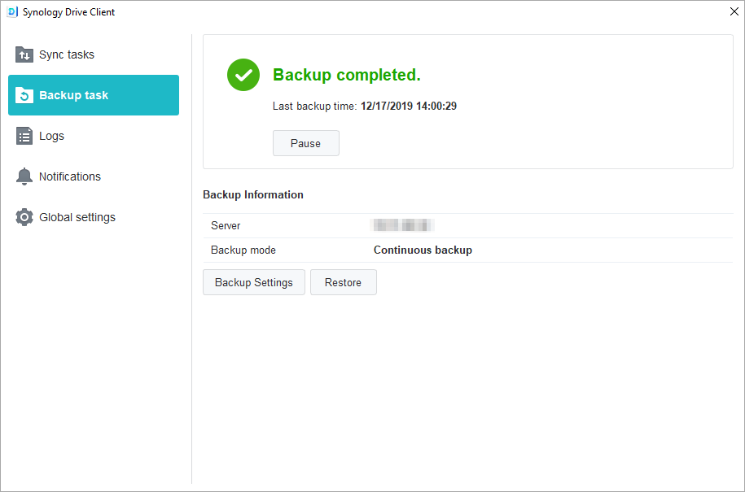
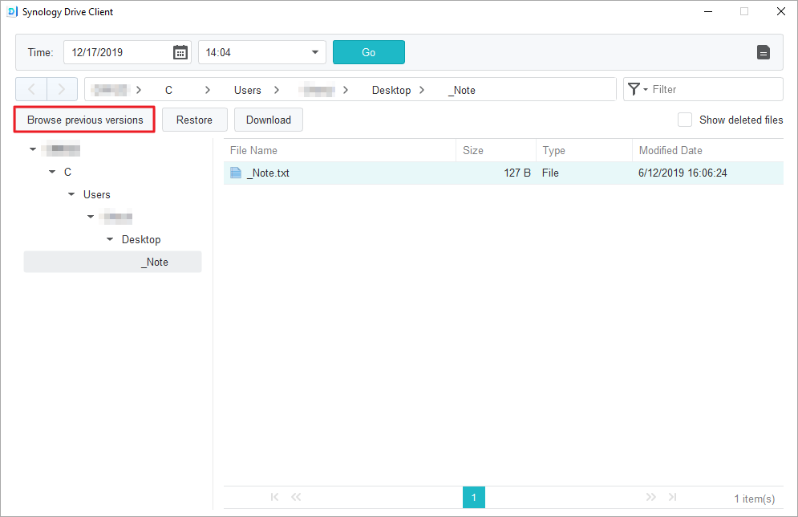

Обзор
Synology Drive Server — это не только сложное межплатформенное программное обеспечение для синхронизации данных, но и интеллектуальный инструмент для резервного копирования данных с персональных компьютеров пользователей. Утилита для рабочего стола Synology Drive Client — это решение для мгновенного резервного копирования в режиме реального времени, которое позволяет экономить полосу пропускания и обеспечивает защиту до 32 предыдущих версий одного файла.
Настройка Synology Drive Server на Synology NAS и скачивание Synology Drive Client
- Откройте Центр пакетов, найдите Synology Drive Server и нажмите Установить. Будет выполнено скачивание трех пакетов: Консоль администрирования Synology Drive, Synology Drive ShareSync и Synology Drive.
- Запустите Synology Drive. В правом нижнем углу появится запрос на скачивание Synology Drive Client.

Можно также в левом нижнем углу нажать на значок пользователя, выбрать Клиент > Скачать клиент.

Кроме того, можно скачать Synology Drive Client в Центре загрузок Synology. - Запустите на компьютере средство установки и следуйте инструкциям по установке Synology Drive Client. После установки запустите Synology Drive Client, нажав кнопку Запустить сейчас.

- Выберите Задача резервного копирования.

- Введите адрес или QuickConnect ID устройства Synology NAS, на котором установлен Synology Drive Server, имя пользователя и пароль. Можно также нажать на значок поиска справа, и Synology Drive Client автоматически начнет искать Synology NAS в вашей локальной сети. Нажмите Далее.

- Выберите источник резервного копирования и отмените выбор подпапок, которые не нужно синхронизировать. Synology Drive Client создаст папку для резервного копирования в выбранном месте назначения с именем компьютера. В качестве папки назначения по умолчанию выбирается папка home. Чтобы использовать папку, которой нет в списке, обратитесь к системному администратору. Системные администраторы могут обратиться к странице справки по Консоли администрирования Synology Drive. Можно также нажать Правила резервного копирования, чтобы установить фильтры и правила синхронизации. Нажмите Далее.

- Выберите режим резервного копирования и нажмите Далее.

- Просмотрите сводку параметров резервного копирования. Нажмите Назад, чтобы внести изменения, или Готово, чтобы завершить настройку.

- В главном окне можно просмотреть ход резервного копирования.

Скачивание и восстановление предыдущих версий синхронизированных файлов в Synology Drive Client
- В Synology Drive Client выберите Задачи резервного копирования > Восстановить и найдите файл или папку, которые необходимо восстановить.

- Выберите файл для извлечения и нажмите Обзор предыдущих версий. Если файл случайно удален с компьютера, его можно восстановить, нажав Восстановить.
 - Выберите версию файла, которую вы хотите скачать, и нажмите Скачать.

Скачивание и восстановление предыдущих версий синхронизированных файлов в Консоли администрирования Synology Drive
- В DSM перейдите в Консоль администрирования Synology Drive > Папка группы, выберите папку, в которой хранится файл, который требуется восстановить, и нажмите Обозреватель версий.

- В окне Обозревателя версий нажмите на файл, который требуется извлечь, и нажмите Обзор предыдущих версий.

- Выберите версию файла, которую вы хотите скачать, и нажмите Скачать. Если вы хотите восстановить выбранную версию файла, нажмите Восстановить, чтобы перезаписать текущую версию файла.

Дополнительные способы защиты данных
Для получения информации о дополнительных способах защиты и резервного копирования данных перейдите по этой ссылке и ознакомьтесь с руководствами по использованию других служб резервного копирования в DSM.